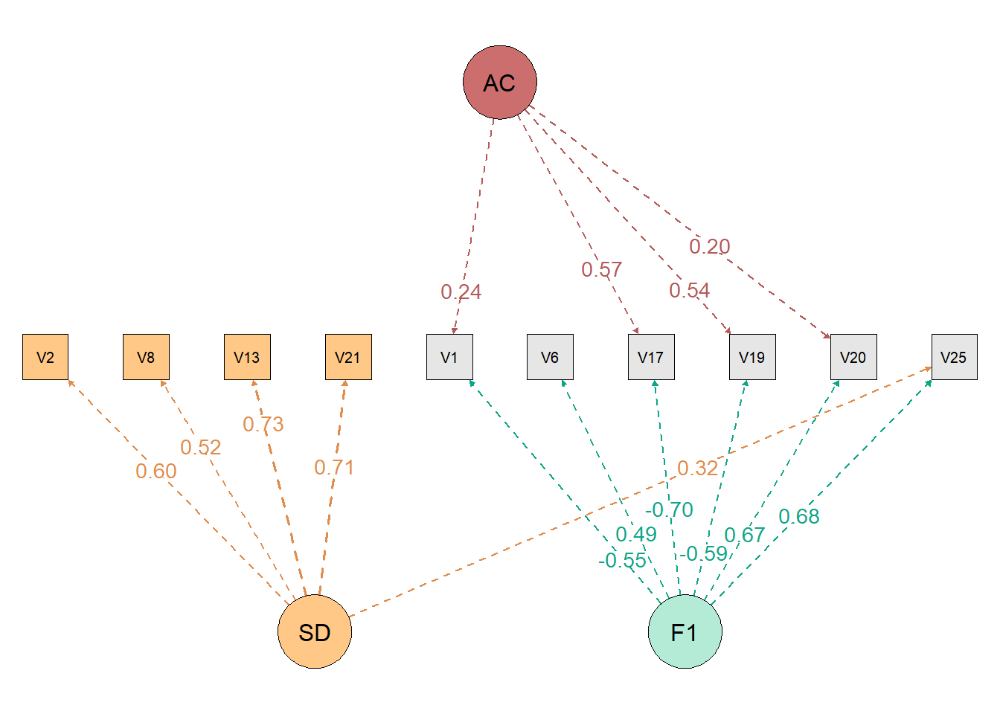
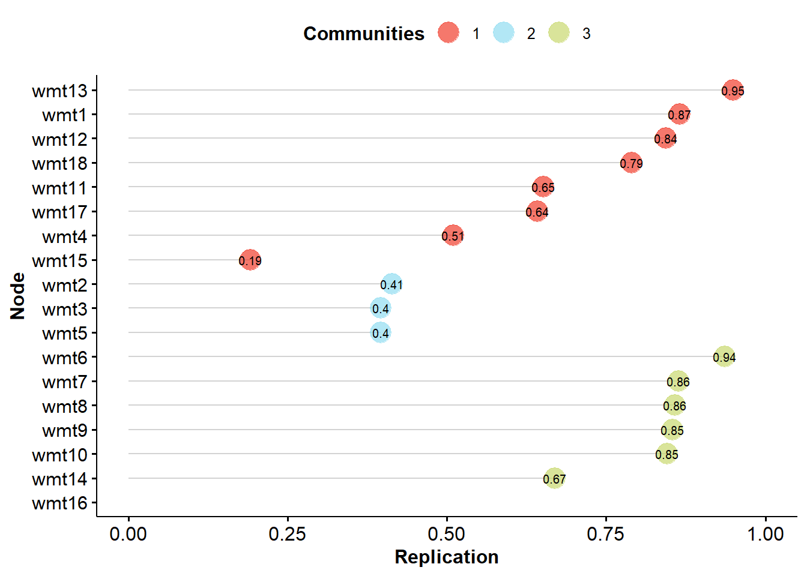
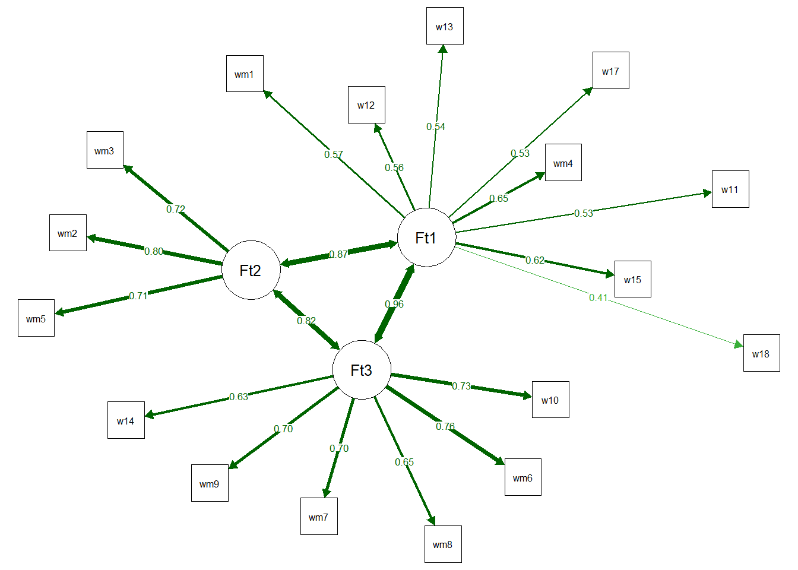

9 Acquiescence Bias
Numerous studies in psychology, education, and marketing involving human subjects are conducted through questionnaires (Bruner et al., 2001). It is assumed that participants will truthfully respond to the items in such research, thus accurately representing their behaviors, thoughts, and feelings with minimal measurement errors. However, it is known that this type of research comes with a host of issues, such as response biases or method effects (e.g., Weijters et al., 2010). In 1942, Cronbach proposed that participants respond to a true-or-false test. From his data, he observed that some respondents tended to choose the “true” option more frequently than others. This style of responding to a questionnaire is termed acquiescence and is commonly defined as the positive endorsement of the item, regardless of its content (Robinson et al., 1973), while disagreement is endorsing the item negatively. Thus, those who are more acquiescent tend to mark higher response options on the questions. Table 9.1 provides an example of responding to an extroversion questionnaire. In this example, note that the respondent tends to mark closer to the extremes (indicated in bold), which would indicate an acquiescent person.
| Item | Totally Disagree | Partially Disagree | Partially agree | I totally agree |
|---|---|---|---|---|
| I am a communicative person | 1 | 2 | 3 | 4 |
| I like interacting with people | 1 | 2 | 3 | 4 |
| I don’t feel energized when I have large social interactions | 1 | 2 | 3 | 4 |
9.1 Acquiescence: trait or state?
Acquiescence is a response style correlated with individual and cultural variables. Literature suggests that individuals with high levels of acquiescence tend to be young, non-depressed, and have a high sense of coherence (Hinz et al., 2007), as well as possessing lower educational levels (Soto et al., 2008). A study investigating whether acquiescence is an inherited trait found no relationship between acquiescence and genetic sharing among monozygotic and dizygotic siblings, suggesting it is also influenced by environmental factors (Kam et al., 2013). Further evidence of its environmental influence includes research indicating that respondents from collectivist cultures tend to be more compliant than those from individualistic cultures (Chen et al., 1995).
Studies suggest that a portion of acquiescence remains stable over time (Billiet & Davidov, 2008). However, employing a latent state-trait modeling approach, Danner et al. (2015) uncovered that acquiescence exhibits trait-like characteristics (i.e., stable over time) as well as state-like features (i.e., subject to situational changes), indicating that both individual traits, such as cognitive ability or personality, and situational factors, such as fatigue, should be taken into account when investigating acquiescence. Some critics of acquiescence research, such as Ferrando et al. (2004), argue that acquiescence should not represent a personality trait because this latent trait cannot be measured through scales. This notion is flawed, and we will delve into this further later. Nonetheless, the authors found that acquiescence is consistent across different domains, present both in studies of personality factors and attitudes (Ferrando et al., 2004).
9.3 The Removal of Acquiescence: Statistics and Design
Acquiescence can be removed in two ways: through statistical analyses that eliminate acquiescence from the covariance structure of the data or through research design. Regarding analyses, acquiescence should be addressed prior to conducting any covariance-based analysis, such as reliability analysis, factor analysis, and structural equation modeling (Billiet and McClendon, 2000; Cambré et al., 2002; Kam et al., 2012; Lorenzo-Seva et al., 2016). To eliminate acquiescence from the covariance structure of the data, it is generally necessary to make two assumptions (Savalei and Falk, 2014). The first assumption is that the acquiescence of each item is independent of the latent factor being measured, meaning this case should be carefully examined in each analysis, as it may not always hold true (Ferrando et al., 2003). The second assumption is that acquiescence bias behaves like a latent factor, affecting different items in different ways (Billiet and McClendon, 2000), and should also be critically examined in each case.
Despite the possibility of controlling acquiescence through scale score composition, it cannot be controlled within the factorial structure of the scale (Savalei and Falk, 2014). To address this issue, some strategies are employed in research design to mitigate this bias. The study by Weijters et al. (2010) demonstrates that individuals exhibit higher levels of acquiescence if the questionnaire labels all response levels (e.g., ranging from “Strongly Disagree” to “Strongly Agree”) and includes a midpoint (e.g., “Neither Agree nor Disagree”). Additionally, adding more gradations of agreement and disagreement does not affect the level of acquiescence, meaning a 5-point scale does not show less or more acquiescence than a 7-point scale (Weijters et al., 2010). Barnette (2000) found in their research that reversing half of the response options, the anchors, leads to higher levels of accuracy and observed variance.
Fribourg et al. (2006) employed a different research design compared to others, comparing Likert scales with semantic differential scales. The study results indicate that semantic differential data are more suitable to the model than Likert format, and they exhibit clearer unidimensionality. Furthermore, the semantic differential scale did not correlate with measures of social desirability, further reducing response falsification (Friborg et al., 2006). Additionally, a semantic differential response scale showed no acquiescence bias in another study (Lewis, 2018). Finally, Zhang & Savalei (2016) explored an alternative version that enhances the factorial structure of psychological scales, termed the expanded format. The expanded format involves writing one item for each variation of the response scale, meaning if it’s a four-point scale, the researcher must write one item representing each level of the latent trait. The participant selects which of these four items best represents them. The expanded format yielded a lower number of dimensions in an exploratory factor analysis (closer to the previously theorized number), better model fit indices, and improved reliability indices (Zhang & Savalei, 2016).
9.4 How to Control Acquiescence in R
9.4.1 Controlling Acquiescence with Ferrando et al. (2009)
To run with the analysis by Ferrando et al. (2009), we first have to install the vampyr (Navarro-Gonzalez et al., 2021) package to run the analyses.
And tell the program that we are going to use the functions of these packages.
To run the analyses, we will use a dataset from the package itself. Let’s see what the database looks like.
V2 V8 V13 V21
Min. :1.000 Min. :1.000 Min. :1.000 Min. :1.000
1st Qu.:3.000 1st Qu.:2.000 1st Qu.:1.000 1st Qu.:2.000
Median :4.000 Median :4.000 Median :2.000 Median :3.000
Mean :3.667 Mean :3.263 Mean :2.317 Mean :2.947
3rd Qu.:5.000 3rd Qu.:4.000 3rd Qu.:3.000 3rd Qu.:4.000
Max. :5.000 Max. :5.000 Max. :5.000 Max. :5.000
V1 V6 V17 V19 V20
Min. :1.000 Min. :1.000 Min. :1.00 Min. :1.000 Min. :1.000
1st Qu.:3.000 1st Qu.:1.000 1st Qu.:3.00 1st Qu.:3.000 1st Qu.:1.000
Median :4.000 Median :2.000 Median :4.00 Median :4.000 Median :2.000
Mean :3.643 Mean :2.467 Mean :3.71 Mean :3.493 Mean :1.997
3rd Qu.:5.000 3rd Qu.:3.000 3rd Qu.:5.00 3rd Qu.:5.000 3rd Qu.:3.000
Max. :5.000 Max. :5.000 Max. :5.00 Max. :5.000 Max. :5.000
V25
Min. :1.000
1st Qu.:1.000
Median :1.000
Mean :1.687
3rd Qu.:2.000
Max. :5.000 According to the package, we have a database with 300 observations and 10 variables, where 6 items measure physical aggression and we have 4 markers of social desirability. Items 1, 2, 3, and 4 are markers of DS (“pure” measures of DS), and the remaining 6 items measure physical aggression. Items 5, 7 and 8 are in the positive pole of the target construct and items 6, 9 and 10 are written in the negative pole of the target construct.
To perform the analysis controlling both desirability and acquiescence, simply use the following code.
res <- ControlResponseBias(vampyr_example,
content_factors = 1,
SD_items = c(1,2,3,4),
corr = "Polychoric",
contAC = TRUE,
unbalanced_items = c(),
rotat = "promin",
PA = FALSE,
factor_scores = FALSE,
path = TRUE
)
DETAILS OF ANALYSIS
Number of participants : 300
Number of items : 10
Items selected as SD items : 1, 2, 3, 4
Dispersion Matrix : Polychoric Correlations
Method for factor extraction : Unweighted Least Squares (ULS)
Rotation Method : none
-----------------------------------------------------------------------
Univariate item descriptives
Item Mean Variance Skewness Kurtosis (Zero centered)
Item 1 3.667 1.260 -0.555 -0.566
Item 2 3.263 1.760 -0.379 -1.005
Item 3 2.317 1.695 0.601 -0.880
Item 4 2.947 1.924 -0.033 -1.284
Item 5 3.643 1.374 -0.565 -0.535
Item 6 2.467 1.802 0.487 -0.967
Item 7 3.710 1.678 -0.652 -0.716
Item 8 3.493 1.629 -0.411 -0.862
Item 9 1.997 1.515 1.041 -0.011
Item 10 1.687 0.925 1.293 0.838
Polychoric correlation is advised when the univariate distributions of ordinal items are
asymmetric or with excess of kurtosis. If both indices are lower than one in absolute value,
then Pearson correlation is advised. You can read more about this subject in:
Muthen, B., & Kaplan D. (1985). A Comparison of Some Methodologies for the Factor Analysis of
Non-Normal Likert Variables. British Journal of Mathematical and Statistical Psychology, 38, 171-189.
Muthen, B., & Kaplan D. (1992). A Comparison of Some Methodologies for the Factor Analysis of
Non-Normal Likert Variables: A Note on the Size of the Model. British Journal of Mathematical
and Statistical Psychology, 45, 19-30.
-----------------------------------------------------------------------
Adequacy of the dispersion matrix
Determinant of the matrix = 0.047816437916934
Bartlett's statistic = 896.4 (df = 45; P = 0.000000)
Kaiser-Meyer-Olkin (KMO) test = 0.76664 (fair)
-----------------------------------------------------------------------
EXPLORATORY FACTOR ANALYSIS CONTROLLING SOCIAL DESIRABILITY AND ACQUIESCENCE
-----------------------------------------------------------------------
Robust Goodness of Fit statistics
Root Mean Square Error of Approximation (RMSEA) = 0.032
Robust Mean-Scaled Chi Square with 23 degrees of freedom = 30.146
Non-Normed Fit Index (NNFI; Tucker & Lewis) = 0.989
Comparative Fit Index (CFI) = 0.994
Goodness of Fit Index (GFI) = 0.977
-----------------------------------------------------------------------
Root Mean Square Residuals (RMSR) = 0.0452
Expected mean value of RMSR for an acceptable model = 0.0578 (Kelley's criterion)
-----------------------------------------------------------------------
Unrotated loading matrix
Factor SD Factor AC Factor 1
Item 1 0.60256 0.00000 0.00000
Item 2 0.51526 0.00000 0.00000
Item 3 0.72709 0.00000 0.00000
Item 4 0.71129 0.00000 0.00000
Item 5 -0.07851 0.23760 0.54830
Item 6 0.27519 0.00227 -0.49055
Item 7 -0.16412 0.57415 0.70141
Item 8 -0.14319 0.54059 0.59107
Item 9 0.26559 0.19608 -0.66804
Item 10 0.31732 0.06249 -0.68219This analysis allows controlling the effects of two response biases: Social Desirability and Acquiescence, extracting the variance due to these factors before extracting the content variance. If you don’t have or want to control acquiescence, just remove the SD_items = c(1,2,3,4) argument.
We do not always have an instrument that is completely balanced, that is, we do not always have the same number of positive and negative items in an instrument. This must be said to the function, just put the column position of the items in your database in the unbalanced_items = c() argument. For example, if the items in columns 10, 11, and 17 of your database are items that do not have an opposite pole, you would put the argument as follows: unbalanced_items = c(10,11,17). The items you place in this argument will not be used in the calculation.
We see that Bartlett’s test of sphericity and KMO were calculated before proceeding with Exploratory Factor Analysis. Furthermore, the model fit indices were calculated. We also see that items 6, 9 and 10 have even high loadings on the desirability factor (“Factor SD”), and items 5, 7 and 8 on the acquiescence factor (“Factor AC”).
The function allows you to calculate people’s factor scores. Factor scores work like when you calculate the mean scores of an instrument to correlate with others, but calculating averages has certain assumptions, while factor scores have others. So, to calculate the factor scores while controlling the DS and acquiescence biases, simply leave the factor scores argument as TRUE (factor_scores = TRUE) and save the result in some variable. In our case, we save the results in the res variable.
To save only the factor scores, simply extract the scores from the res list.
This way, just put this column of factor scores together with your data (using “cbind()”) and then calculate whatever analysis you want.
9.4.2 Controlling Acquiescence with Random Intercepts
First, we have to install the lavaan (Rosseel, 2012) package for the analyzes and the EGAnet (Golino & Christensen, 2023) package for the dataset.
Next, we tell R that we are going to use the functions from the packages.
Then, we must have information on which model we should test. In other words, we have to know the theory behind some instrument: how many factors we have, which items represent which factors, whether or not the factors are correlated, etc.
Let’s use the EGAnet package as an example (i.e., Wiener Matrizen-Test 2), which has 2 factors and items on the positive and negative pole.
model_RI <- '
factor1 =~ NA*wmt1 + wmt2 + wmt3 + wmt5 + wmt11 +
wmt12 + wmt13 + wmt15 + wmt16 + wmt17 + wmt18
factor2 =~ NA*wmt4 + wmt6 + wmt7 + wmt8 +
wmt9 + wmt10 + wmt14
# Random Intercepts
acquiescence =~ 1*wmt1 + 1*wmt2 + 1*wmt3 + 1*wmt5 +
1*wmt11 + 1*wmt12 + 1*wmt13 + 1*wmt15 + 1*wmt16 +
1*wmt17 + 1*wmt18 + 1*wmt4 + 1*wmt6 + 1*wmt7 +
1*wmt8 + 1*wmt9 + 1*wmt10 + 1*wmt14
factor1 ~~ 0*acquiescence
factor2 ~~ 0*acquiescence
acquiescence ~~ acquiescence
factor1 ~~ 1*factor1
factor2 ~~ 1*factor2
'Now let’s calculate the internal structure controlling for acquiescence.
sem.fit <- lavaan::sem(model = model_RI,
data = EGAnet::wmt2[,7:24],
estimator = 'WLSMV',
ordered = TRUE
)
lavaan::summary(sem.fit,
fit.measures=TRUE,
standardized=TRUE
)lavaan 0.6.17 ended normally after 43 iterations
Estimator DWLS
Optimization method NLMINB
Number of model parameters 38
Number of observations 1185
Model Test User Model:
Standard Scaled
Test Statistic 232.896 285.231
Degrees of freedom 133 133
P-value (Chi-square) 0.000 0.000
Scaling correction factor 0.873
Shift parameter 18.557
simple second-order correction
Model Test Baseline Model:
Test statistic 12385.490 7849.254
Degrees of freedom 153 153
P-value 0.000 0.000
Scaling correction factor 1.589
User Model versus Baseline Model:
Comparative Fit Index (CFI) 0.992 0.980
Tucker-Lewis Index (TLI) 0.991 0.977
Robust Comparative Fit Index (CFI) 0.922
Robust Tucker-Lewis Index (TLI) 0.910
Root Mean Square Error of Approximation:
RMSEA 0.025 0.031
90 Percent confidence interval - lower 0.020 0.026
90 Percent confidence interval - upper 0.030 0.036
P-value H_0: RMSEA <= 0.050 1.000 1.000
P-value H_0: RMSEA >= 0.080 0.000 0.000
Robust RMSEA 0.065
90 Percent confidence interval - lower 0.054
90 Percent confidence interval - upper 0.076
P-value H_0: Robust RMSEA <= 0.050 0.011
P-value H_0: Robust RMSEA >= 0.080 0.012
Standardized Root Mean Square Residual:
SRMR 0.052 0.052
Parameter Estimates:
Parameterization Delta
Standard errors Robust.sem
Information Expected
Information saturated (h1) model Unstructured
Latent Variables:
Estimate Std.Err z-value P(>|z|) Std.lv Std.all
factor1 =~
wmt1 0.233 0.065 3.580 0.000 0.233 0.233
wmt2 0.607 0.066 9.213 0.000 0.607 0.607
wmt3 0.449 0.061 7.410 0.000 0.449 0.449
wmt5 0.314 0.062 5.054 0.000 0.314 0.314
wmt11 0.019 0.074 0.260 0.795 0.019 0.019
wmt12 0.061 0.074 0.828 0.408 0.061 0.061
wmt13 0.110 0.069 1.603 0.109 0.110 0.110
wmt15 0.136 0.070 1.947 0.052 0.136 0.136
wmt16 0.126 0.071 1.772 0.076 0.126 0.126
wmt17 -0.044 0.078 -0.568 0.570 -0.044 -0.044
wmt18 -0.339 0.098 -3.452 0.001 -0.339 -0.339
factor2 =~
wmt4 0.300 0.056 5.328 0.000 0.300 0.300
wmt6 0.504 0.052 9.750 0.000 0.504 0.504
wmt7 0.352 0.055 6.452 0.000 0.352 0.352
wmt8 0.269 0.057 4.695 0.000 0.269 0.269
wmt9 0.393 0.054 7.292 0.000 0.393 0.393
wmt10 0.477 0.054 8.910 0.000 0.477 0.477
wmt14 0.227 0.060 3.817 0.000 0.227 0.227
acquiescence =~
wmt1 1.000 0.580 0.580
wmt2 1.000 0.580 0.580
wmt3 1.000 0.580 0.580
wmt5 1.000 0.580 0.580
wmt11 1.000 0.580 0.580
wmt12 1.000 0.580 0.580
wmt13 1.000 0.580 0.580
wmt15 1.000 0.580 0.580
wmt16 1.000 0.580 0.580
wmt17 1.000 0.580 0.580
wmt18 1.000 0.580 0.580
wmt4 1.000 0.580 0.580
wmt6 1.000 0.580 0.580
wmt7 1.000 0.580 0.580
wmt8 1.000 0.580 0.580
wmt9 1.000 0.580 0.580
wmt10 1.000 0.580 0.580
wmt14 1.000 0.580 0.580
Covariances:
Estimate Std.Err z-value P(>|z|) Std.lv Std.all
factor1 ~~
acquiescence 0.000 0.000 0.000
factor2 ~~
acquiescence 0.000 0.000 0.000
factor1 ~~
factor2 0.591 0.078 7.602 0.000 0.591 0.591
Thresholds:
Estimate Std.Err z-value P(>|z|) Std.lv Std.all
wmt1|t1 -0.475 0.038 -12.521 0.000 -0.475 -0.475
wmt2|t1 -0.881 0.042 -20.956 0.000 -0.881 -0.881
wmt3|t1 -0.651 0.039 -16.544 0.000 -0.651 -0.651
wmt5|t1 -0.475 0.038 -12.521 0.000 -0.475 -0.475
wmt11|t1 0.447 0.038 11.833 0.000 0.447 0.447
wmt12|t1 0.471 0.038 12.406 0.000 0.471 0.471
wmt13|t1 0.195 0.037 5.311 0.000 0.195 0.195
wmt15|t1 0.445 0.038 11.776 0.000 0.445 0.445
wmt16|t1 0.412 0.038 10.972 0.000 0.412 0.412
wmt17|t1 0.815 0.041 19.787 0.000 0.815 0.815
wmt18|t1 0.641 0.039 16.320 0.000 0.641 0.641
wmt4|t1 -0.158 0.037 -4.325 0.000 -0.158 -0.158
wmt6|t1 -0.355 0.037 -9.533 0.000 -0.355 -0.355
wmt7|t1 -0.208 0.037 -5.658 0.000 -0.208 -0.208
wmt8|t1 0.116 0.037 3.164 0.002 0.116 0.116
wmt9|t1 -0.158 0.037 -4.325 0.000 -0.158 -0.158
wmt10|t1 -0.280 0.037 -7.569 0.000 -0.280 -0.280
wmt14|t1 0.128 0.037 3.513 0.000 0.128 0.128
Variances:
Estimate Std.Err z-value P(>|z|) Std.lv Std.all
acquiescence 0.337 0.016 21.029 0.000 1.000 1.000
factor1 1.000 1.000 1.000
factor2 1.000 1.000 1.000
.wmt1 0.609 0.609 0.609
.wmt2 0.295 0.295 0.295
.wmt3 0.462 0.462 0.462
.wmt5 0.565 0.565 0.565
.wmt11 0.663 0.663 0.663
.wmt12 0.659 0.659 0.659
.wmt13 0.651 0.651 0.651
.wmt15 0.645 0.645 0.645
.wmt16 0.647 0.647 0.647
.wmt17 0.661 0.661 0.661
.wmt18 0.548 0.548 0.548
.wmt4 0.573 0.573 0.573
.wmt6 0.409 0.409 0.409
.wmt7 0.539 0.539 0.539
.wmt8 0.591 0.591 0.591
.wmt9 0.508 0.508 0.508
.wmt10 0.436 0.436 0.436
.wmt14 0.611 0.611 0.611We can calculate from people’s factor scores, just use the following code.
scores <- lavaan::lavPredict(
sem.fit,
type = "lv",
method = "EBM",
label = TRUE,
append.data = TRUE,
optim.method = "bfgs"
)We see that in the variable “scores” the factor scores of each subject were calculated and these scores were added to their database.
9.4.3 Controlling Acquiescence with Random Intercepts Exploratory Graph Analysis
First, we have to install the EGAnet (Golino & Christensen, 2023) package for the analyzes and lavaan (Rosseel, 2012) for the fit indices.
Next, we tell R that we are going to use the functions from the packages.
We can also bootstrap controlling for acquiescence.
To get a summary of the results, just take the bootstrap output.
Model: GLASSO (EBIC)
Correlations: auto
Algorithm: Walktrap
Unidimensional Method: Louvain
----
EGA Type: riEGA
Bootstrap Samples: 500 (Parametric)
1 2 3 4 5 6
Frequency: 0.006 0.286 0.444 0.198 0.06 0.006
Median dimensions: 3 [1.24, 4.76] 95% CIAdditionally, we can take the stability output of the items.

EGA Type: riEGA
Bootstrap Samples: 500 (Parametric)
Proportion Replicated in Dimensions:
wmt1 wmt2 wmt3 wmt4 wmt5 wmt6 wmt7 wmt8 wmt9 wmt10 wmt11 wmt12 wmt13
0.866 0.414 0.396 0.510 0.396 0.936 0.864 0.858 0.854 0.846 0.652 0.844 0.950
wmt14 wmt15 wmt16 wmt17 wmt18
0.670 0.192 NA 0.642 0.790 We can see network loadings (similar to factor loadings), with the code:
1 2 3 NA
wmt13 0.310676334 0.000000000 0.006782463 0.0000000
wmt18 0.291274702 0.293579539 0.099702419 0.0000000
wmt1 0.243167322 -0.046997589 0.052806787 0.0000000
wmt12 0.153284729 0.050799771 0.000000000 0.1115768
wmt11 0.102052291 0.008739402 0.062516602 0.0000000
wmt17 0.080001971 0.063525600 0.045647999 0.0000000
wmt4 0.074492247 0.000000000 -0.030165523 0.0000000
wmt15 0.019148038 0.000000000 -0.005967561 0.0000000
wmt2 0.117715634 0.230607341 0.069198724 0.0000000
wmt3 0.123121237 0.151225610 0.081589490 0.0000000
wmt5 0.044845930 0.079381732 0.000000000 0.0000000
wmt9 0.066910306 0.000000000 0.196554454 0.0000000
wmt6 -0.010125599 0.086182827 0.191423280 0.0000000
wmt10 0.051388034 0.043413062 0.152658672 0.0000000
wmt7 0.029578222 0.000000000 0.117856996 0.0000000
wmt8 0.017213035 0.000000000 0.077519918 0.0000000
wmt14 0.038274764 -0.042494612 0.061525090 0.0000000
wmt16 -0.006992994 0.000000000 0.000000000 0.0000000This step by step must be repeated (removing items with low stability or factor loadings in the wrong dimensions) until the stability of the items is above 70% or 75%.
We were also able to obtain the fit through a Confirmatory Factor Analysis by EGAnet.
fit <- EGAnet::CFA(EGA_RI$EGA,
data = EGAnet::wmt2[,7:24],
estimator = "WLSMV",
plot.CFA = TRUE,
layout = "spring"
)[1] "wmt1" "wmt4" "wmt11" "wmt12" "wmt13" "wmt15" "wmt17" "wmt18"
[1] "wmt2" "wmt3" "wmt5"
[1] "wmt6" "wmt7" "wmt8" "wmt9" "wmt10" "wmt14"
To request fit indices we can use lavaan.
npar fmin
37.000 0.089
chisq df
209.834 116.000
pvalue chisq.scaled
0.000 294.191
df.scaled pvalue.scaled
116.000 0.000
chisq.scaling.factor baseline.chisq
0.741 11168.058
baseline.df baseline.pvalue
136.000 0.000
baseline.chisq.scaled baseline.df.scaled
7229.787 136.000
baseline.pvalue.scaled baseline.chisq.scaling.factor
0.000 1.555
cfi tli
0.991 0.990
cfi.scaled tli.scaled
0.975 0.971
cfi.robust tli.robust
0.906 0.889
nnfi rfi
0.990 0.978
nfi pnfi
0.981 0.837
ifi rni
0.992 0.991
nnfi.scaled rfi.scaled
0.971 0.952
nfi.scaled pnfi.scaled
0.959 0.818
ifi.scaled rni.scaled
0.975 0.975
nnfi.robust rni.robust
0.889 0.906
rmsea rmsea.ci.lower
0.026 0.020
rmsea.ci.upper rmsea.ci.level
0.032 0.900
rmsea.pvalue rmsea.close.h0
1.000 0.050
rmsea.notclose.pvalue rmsea.notclose.h0
0.000 0.080
rmsea.scaled rmsea.ci.lower.scaled
0.036 0.031
rmsea.ci.upper.scaled rmsea.pvalue.scaled
0.041 1.000
rmsea.notclose.pvalue.scaled rmsea.robust
0.000 0.075
rmsea.ci.lower.robust rmsea.ci.upper.robust
0.064 0.085
rmsea.pvalue.robust rmsea.notclose.pvalue.robust
0.000 0.211
rmr rmr_nomean
0.050 0.053
srmr srmr_bentler
0.053 0.050
srmr_bentler_nomean crmr
0.053 0.053
crmr_nomean srmr_mplus
0.056 NA
srmr_mplus_nomean cn_05
NA 803.022
cn_01 gfi
871.893 0.985
agfi pgfi
0.980 0.746
mfi wrmr
0.961 1.171 We can calculate from people’s factor scores, just use the following code.
9.5 References
Barnette, J. J. (2000). Effects of stem and likert response option reversals on survey internal consistency: If you feel the need, there is a better alternative to using those negatively worded stems. Educational and Psychological Measurement, 60(3), 361–370. https://doi.org/10.1177/00131640021970592
Baumgartner, H., & Steenkamp, J. (2001). Response styles in marketing research: A cross national investigation. Journal of Marketing Research, 38(2), 143–156. https://doi.org/10.1509/jmkr.38.2.143.18840
Billiet, J. B., & Davidov, E. (2008). Testing the stability of an acquiescence style factor behind two interrelated substantive variables in a panel design. Sociological Methods Research, 36(4), 542–562. https://doi.org/10.1177/0049124107313901
Billiet, J. B., & McClendon, M. J. (2000). Modeling acquiescence in measurement models for two balanced sets of items. Structural Equation Modeling, 7, 608–628. https://doi.org/10.1207/S15328007SEM0704_5
Bruner, G. C., James, K. E., & Hensel, P. J. (2001). Marketing scales handbook. A compilation of multi item measures, volume iii. American Marketing Association.
Cambré, B., Welkenhuysen-Gybels, J., & Billiet, J. (2002). Is it content or style? An evaluation of two competitive measurement models applied to a balanced set of ethnocentrism items. International Journal of Comparative Sociology, 43, 1–20. https://doi.org/10.1177/002071520204300101
Chang, L. (1995). Connotatively consistent and reversed connotatively inconsistent items are not fully equivalent: Generalizability study. Educational and Psychological Measurement, 55, 991–997. https://doi.org/10.1177/0013164495055006007
Chen, C., Shin-ying, L., & Stevenson, H. W. (1995). Response style and cross-cultural comparisons of rating scales among east asian and north american students. Psychological Science, 6, 170–175. https://doi.org/10.1111/j.1467-9280.1995.tb00327.x
Cronbach, L. J. (1942). Studies of acquiescence as a factor in the true-false test. Journal of Educational Psychology, 33, 401–415. https://doi.org/10.1037/h0054677
Danner, D., Aichholzer, J., & Rammstedt, B. (2015). Acquiescence in personality questionnaires: Relevance, domain specificity, and stability. Journal of Research in Personality, 57, 119–130. https://doi.org/10.1016/j.jrp.2015.05.004
Enos, M. M. (2000). Just say no!: The impact of negation in survey research. Popular Measurement, 3(1), 34–39.
Essau, e. a., C. A. (2012). Psychometric properties of the strength and difficulties questionnaire from five european countries. International Journal of Methods in Psychiatric Research, 21(3), 232–245. https://doi.org/10.1002/mpr.1364
Ferrando, P. J., Condon, L., & Chico, E. (2004). The convergent validity of acquiescence: An empirical study relating balanced scales and separate acquiescence scales. Personality and individual differences, 37(7), 1331–1340. https://doi.org/10.1016/j.paid.2004.01.003
Ferrando, P. J., Lorenzo-Seva, U., & Chico, E. (2003). Unrestricted factor analytic procedures for assessing acquiescent responding in balanced, theoretically unidimensional personality scales. Multivariate Behavioral Research, 38(2), 353–374. https://doi.org/10.1207/S15327906MBR3803_04
Friborg, O., Martinussen, M., & Rosenvinge, J. H. (2006). Likert-based vs. semantic differential-based scorings of positive psychological constructs: A psychometric comparison of two versions of a scale measuring resilience. Personality and Individual Differences, 40(5), 873-884. https://doi.org/10.1016/j.paid.2005.08.015
Golino, H., & Christensen, A. P. (2023). EGAnet: Exploratory Graph Analysis – A framework for estimating the number of dimensions in multivariate data using network psychometrics. R package.
Hinz, A., Michalski, D., Schwarz, R., & Herzberg, P. Y. (2007). The acquiescence effect in responding to a questionnaire. GMS Psycho-Social Medicine, 4.
Hughes, G. D. (2009). The impact of incorrect responses to reverse-coded survey items. Research in the Schools, 16(2).
Kam, C., Schermer, J. A., Harris, J., & Vernon, P. A. (2013). Heritability of acquiescence bias and item keying response style associated with the HEXACO Personality Scale. Twin Research and Human Genetics, 16(4), 790-798.
Kam, C., Zhou, X., Zhang, X., & Ho, M. Y. (2012). Examining the dimensionality of self-construals and individualistic–collectivistic values with random intercept item factor analysis. Personality and Individual Differences, 53(6), 727-733. https://doi.org/10.1016/j.paid.2012.05.023
Knight, R. G., Chisholm, B. J., Marsh, N. V., & Godfrey, H. P. (1988). Some normative, reliability, and factor analytic data for the revised UCLA Loneliness Scale. Journal of Clinical Psychology, 44(2), 203-206. https://doi.org/10.1002/1097-4679(198803)44:2%3C203::AID-JCLP2270440218%3E3.0.CO;2-5
Lewis, J. R. (2018). Comparison of item formats: Agreement vs. item-specific endpoints. Journal of Usability Studies, 11(1).
Lorenzo-Seva, U., Navarro-González, D., & Vigil-Colet, A. (2016). How response bias affects the factorial structure of personality self-reports.
Luthar, S. S., & Zigler, E. (1991). Vulnerability and competence: A review of research on resilience in childhood. American Journal of Orthopsychiatry, 6(1), 6–12. https://doi.org/10.1037/h0079218
Marsh, H. W. (1986). Multidimensional Self Concepts: Do Positively and Negatively Worded Items Measure Substantively Different Components of Self.
Marsh, H. W. (1996). Positive and negative global self-esteem: A substantively meaningful distinction or artifactors?. Journal of personality and social psychology, 70(4), 810-819. https://doi.org/10.1037/0022-3514.70.4.810
Navarro-Gonzalez, D., Vigil-Colet, A., Ferrando, P. J., Lorenzo-Seva, U., & Tendeiro, J. N. (2021). vampyr: Factor Analysis Controlling the Effects of Response Bias. https://CRAN.R-project.org/package=vampyr.
Pilotte, W. J., & Gable, R. K. (1990). The impact of positive and negative item stems on the validity of a computer anxiety scale. Educational and Psychological Measurement, 50(3), 603–610. https://doi.org/10.1177/0013164490503016
Podsakoff, P.M., MacKenzie, S.B., Lee, J.Y., & Podsakoff, N.P. (2003). Common method biases in behavioral research: a critical review of the literature and recommended remedies. Journal of applied psychology, 88(5), 879-903. https://doi.org/10.1037/0021-9010.88.5.879
Primi, R., De Fruyt, F., Santos, D., Antonoplis, S., & John, O. P. (2020). True or false? Keying direction and acquiescence influence the validity of socio-emotional skills items in predicting high school achievement. International Journal of Testing, 20(2), 97-121. https://doi.org/10.1080/15305058.2019.1673398
R Core Team (2023). R: A Language and Environment for Statistical Computing. R Foundation for Statistical Computing, Vienna, Austria. https://www.R-project.org/.
Rosseel, Y. (2012). lavaan: An R Package for Structural Equation Modeling. Journal of Statistical Software, 48(2), 1-36. https://doi.org/10.18637/jss.v048.i02
Robinson, J. P., Shaver, P. R., and Wrightsman, L. S. (1991). Measures of social psychological attitudes (Vol. 1. Measures of personality and social psychological atitudes). Academic Press.
Salazar, M. S. (2015). The dilemma of combining positive and negative items in scales. Psicothema, 27(2), 192–199. https://doi.org/10.7334/psicothema2014.266
Sauro, J., & Lewis, J. (2011). When designing usability questionnaires, does it hurt to be positive? Proceedings of the SIGCHI Conference on Human Factors in Computing Systems, 2215–2224. https://doi.org/10.1145/1978942.1979266
Savalei, V., & Falk, C. F. (2014). Recovering substantive factor loadings in the presence of acquiescence bias: A comparison of three approaches. Multivariate behavioral research, 49(5), 407–424. https://doi.org/10.1080/00273171.2014.931800
Schriesheim, C. A., & Hill, K. D. (1981). Controlling acquiescence response bias by item reversals: The effect on questionnaire validity. Educational and psychological measurement, 41(4), 1101–1114. https://doi.org/10.1177/001316448104100420
Soto, C. J., John, O. P., Gosling, S. D., & Potter, J. (2008). The developmental psychometrics of big five self-reports: Acquiescence, factor structure, coherence, and differentiation from ages 10 to 20. Journal of personality and social psychology, 94(4), 718-737. https://doi.org/10.1037/0022-3514.94.4.718
Suárez-Alvarez, J., Pedrosa, I., Lozano Fernández, L. M., García-Cueto, E., Cuesta, M., & Muñiz, J. (2018). Using reversed items in Likert scales: A questionable practice. Psicothema, 30(2), 149-158. https://doi.org/10.7334/psicothema2018.33
Valentini, F. (2017). Influência e controle da aquiescência na análise fatorial [Influence and control of acquiesncence in factor analysis]. Avaliação Psicológica [Psychological Assessment], 16(2), 6–12. https://doi.org/10.15689/ap.2017.1602.ed
Valentini, F., & Hauck Filho, N. (2020). O impacto da aquiescência na estimação de coeficientes de validade [Acquiescence impact in the estimation of validity coefficients]. Avaliação Psicológica [Psychological Assessment], 19(1), 1–3. http://dx.doi.org/10.15689/ap.2020.1901.ed
Van Sonderen, E., Sanderman, R., & Coyne, J. C. (2013). Ineffectiveness of reverse wording of questionnaire items: Let’s learn from cows in the rain. PloS one, 8(7), e68967. https://doi.org/10.1371/journal.pone.0068967
Weijters, B., & Baumgartner, H. (2012). Misresponse to reversed and negated items in surveys: A review. Journal of Marketing Research, 49(5), 737-747. https://doi.org/10.1509/jmr.11.0368
Weijters, B., Cabooter, E., & Schillewaert, N. (2010). The effect of rating scale format on response styles: The number of response categories and response category labels. International Journal of Research in Marketing, 27(3), 236-247. https://doi.org/10.1016/j.ijresmar.2010.02.004
Woods, C. M. (2006). Careless responding to reverse-worded items: Implications for confirmatory factor analysis. Journal of Psychopathology and Behavioral Assessment, 28(3), 186–191. https://doi.org/10.1007/s10862-005-9004-7
Wong, N., Rindfleisch, A., & Burroughs, J. E. (2003). Do reverse-worded items confound measures in cross-cultural consumer research? The case of the material values scale. Journal of consumer research, 30(1), 72-91. https://doi.org/10.1086/374697
Zhang, X., Noor, R., & Savalei, V. (2016). Examining the effect of reverse worded items on the factor structure of the need for cognition scale. PloS one, 11(6), e0157795. https://doi.org/10.1371/journal.pone.0157795
Zhang, X., & Savalei, V. (2016). Improving the factor structure of psychological scales: The expanded format as an alternative to the likert scale format. Educational and psychological measurement, 76(3), 357–386. https://doi.org/10.1177/0013164415596421